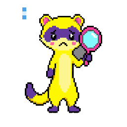

forensic-ferret-cyberhome


Evidence Locker v0.1.2 // 20261018
evidence-locker-quick-summary
Incident timelines and log analysis.
astras-pet-os-system-map
Open Evidence Locker on the System Mapforensic-ferret-intelligence-levels
on off working correctly requires maintenance not checked yet (click it)
forensic-ferret-L1-tool-panel
3rd party programs · 0
None on the map yet.
Native programs · 0
None on the map yet.
Native tools · 4
Case openerOpens a case two minutes after every crash Log Lynx catches, or for a moment Astra names. Merged (evidence-locker PR #2); runs on this PC when Forensic Ferret is started.
evidence-locker-v1.0-case-opener-v1.0A tool of Evidence Locker (Astra, 2026-10-18): Opens a case two minutes after every crash Log Lynx catches, or for a moment Astra names. Merged (evidence-locker PR #2); runs on this PC when Forensic Ferret is started.
works today · its own page is not linked on the System Map yet
Evidence collectorGathers farm events, crash pictures and stack traces, screenshots, file activity (names and times) and Windows log errors around the moment; read-only copies. Merged (evidence-locker PR #2); runs on this PC when Forensic Ferret is started.
evidence-locker-v1.0-evidence-collector-v1.0A tool of Evidence Locker (Astra, 2026-10-18): Gathers farm events, crash pictures and stack traces, screenshots, file activity (names and times) and Windows log errors around the moment; read-only copies. Merged (evidence-locker PR #2); runs on this PC when Forensic Ferret is started.
works today · its own page is not linked on the System Map yet
Custody logA hash-chained chain of custody per case; --verify re-checks every item and entry. Merged (evidence-locker PR #2); runs on this PC when Forensic Ferret is started.
evidence-locker-v1.0-custody-log-v1.0A tool of Evidence Locker (Astra, 2026-10-18): A hash-chained chain of custody per case; --verify re-checks every item and entry. Merged (evidence-locker PR #2); runs on this PC when Forensic Ferret is started.
works today · its own page is not linked on the System Map yet
Timeline builderOne timeline and a plain report.md per case. Merged (evidence-locker PR #2); runs on this PC when Forensic Ferret is started.
evidence-locker-v1.0-timeline-builder-v1.0A tool of Evidence Locker (Astra, 2026-10-18): One timeline and a plain report.md per case. Merged (evidence-locker PR #2); runs on this PC when Forensic Ferret is started.
works today · its own page is not linked on the System Map yet
From the System Map. Click a name to open it. Click a light to change it: a bubble says what it means. Something not built yet is off, and a grey maintenance light is not checked yet. ON/OFF and maintenance are saved in this browser only: the core does not enforce them yet (PET-PROGRAM-FRAMEWORK.md, section 4).
forensic-ferret-L2-tool-panel
Native tricks · 0
None recorded in the hub yet. Skill Scout will keep them.
Schedule
- Self-audit: weekly, by the Friendly Farmer's round (cases and their chains of custody)
- Weekly backlog run: not set up yet (needs an L3 seat)
Status line
- Data
- yours, in this browser only
- Last entry
- none yet
- Updated
- page spawned 20261018; version 0.1.2-20261019 (from evidence-locker's pet.json)
- Seat
- empty
- Last check
- 2026-10-20: “All good.”
- On the map
- program-70
Pets it talks to
forensic-ferret-L3-tool-panel
- Seat: empty. No farmhand is seated in Evidence Locker (L3 is not connected).
- L3 activity: Nobody is working on Forensic Ferret right now.
- Tricks running now: none
- Harness skills: none recorded in the hub yet (they belong to the seat, not to the pet)
- Suggestions for you: none yet
- Token use: not measured yet (Token Toucan is planned)
forensic-ferret-L4-tool-panel
Approvals waiting on you
Nothing from the Friendly Farmer's last merged round.
Grants
In forensic-ferret-rwx-panel, below: what each level should be (R W X), and whether that is in code.
Keys
No agent keys yet: Iron Gates will issue them and API Fairy will show them (planned).
Requires maintenance
- Nothing marked yellow in this browser.
Pet passport
- Microchip
- not signed yet
- Pedigree
- findastra/evidence-locker, added 2026-10-18
- Stamps
- installs and updates not recorded yet
- Vaccination card
- no security patches recorded
- Vet records
- vet-clinic tickets
forensic-ferret-rwx-panel
Should be: what each level may read (R), write (W) and run (X) on Evidence Locker. Then whether that is in code:
✓ In code A test, setting or script makes it true, and the grant names that proof (its evidence).⚠︎ Rule only A rule agents agree to follow (AGENTS.md or a skill). Nothing stops someone who breaks it.○ Not built Designed, not built yet.
Who may use Evidence Locker
L1Should beRWXa program or tool⚠︎ Rule only
RWXItself: its own repo folder and its declared data folder⚠︎ Rule only
Written only: farm-security, section 2. Hub scripts refuse a path outside the pet's folder (scripts/animal-guard-20261013.mjs), but a pet's own program runs as you, so it could reach further.
Next (planned): The Police Station watches every write and every key use.
RWXLog Lynx (Log Den: crash-catcher, windows-log-reader, heartbeat-checker)⚠︎ Rule only
Written only: Log Den’s own code only reads, and on a .NET crash window presses Details and nothing else (log-den-20261018.cs). It writes only its own data folder. Nothing enforces this: it runs as you. Asked for on 2026-10-18; Astra approves it by merging.
Next (planned): Iron Gates issues the grant; The Police Station watches that Log Den writes only its own folder.
L2Should beRWXa pet program⚠︎ Rule only
RWXItself: its own repo folder and its declared data folder⚠︎ Rule only
Written only: farm-security, section 2. Hub scripts refuse a path outside the pet's folder (scripts/animal-guard-20261013.mjs), but a pet's own program runs as you, so it could reach further.
Next (planned): The Police Station watches every write and every key use.
RWXLog Lynx (Log Den: crash-catcher, windows-log-reader, heartbeat-checker)⚠︎ Rule only
Written only: Log Den’s own code only reads, and on a .NET crash window presses Details and nothing else (log-den-20261018.cs). It writes only its own data folder. Nothing enforces this: it runs as you. Asked for on 2026-10-18; Astra approves it by merging.
Next (planned): Iron Gates issues the grant; The Police Station watches that Log Den writes only its own folder.
L3Should beRWXan AI agent in a seat⚠︎ Rule only
RWXThe agent in the seat⚠︎ Rule only
Written only: Only animals, and only on a claude/ or codex/ branch, never straight on main (AGENTS.md). Hub scripts check the animal part with scripts/animal-guard-20261013.mjs, on the pet’s own GitHub account (github_owner in pets.json); nothing checks the branch part.
Next (planned): Short-lived session keys from Iron Gates.
RWXItself: its own repo folder and its declared data folder⚠︎ Rule only
Written only: farm-security, section 2. Hub scripts refuse a path outside the pet's folder (scripts/animal-guard-20261013.mjs), but a pet's own program runs as you, so it could reach further.
Next (planned): The Police Station watches every write and every key use.
L4Should beRWXyou, the verified human✓ In code
RWXAstra (you, L4)✓ In code
Enforced: It is your PC and your accounts. You give and take back every other grant in this list.
Proof: Your own Windows account on this PC, and your own GitHub, Discord and AI accounts: only you sign in to them
What Evidence Locker may use
L1+L2+L3RWXIts own repo folder and its declared data folder⚠︎ Rule only
Written only: farm-security, section 2. Hub scripts refuse a path outside the pet's folder (scripts/animal-guard-20261013.mjs), but a pet's own program runs as you, so it could reach further.
Next (planned): The Police Station watches every write and every key use.
L1+L2RWXShared tools, other people's programs and devices⚠︎ Rule only
Written only: One copy of a shared tool, one owner; other pets get a grant: folders, R W X and limits (TOOLS-AND-TRICKS.md). Until Iron Gates is built, a pet asks Astra and the grant is written in both pets' connection boxes.
Next (planned): Iron Gates issues grants and Astra approves them.
L3RWXFarmhands (ring 4)⚠︎ Rule only
Written only: X on a farmhand means sending it a request and reading the answer. Nobody rewrites a model, and only Astra changes her local farmhands. Only farmhands on the allowlist get keys; today they are Astra's own API keys.
Next (planned): Short-lived keys from Iron Gates, shown in API Fairy's mushroom circle; local farmhands bound to this PC with a key.
L1+L2RWXThe other pets’ farm events and Log Lynx’s crash pictures, screenshots saved around a case (copied in), file names and times in the Claude Code, Codex and Astra’s PetOS folders (never contents), the Windows Application log, and the id and title of each Claude Code session⚠︎ Rule only
Written only: evidence-locker-20261018.cs reads and copies into its own cases folder only; it never changes or deletes what it investigates. Nothing enforces this: it runs as you. Asked for on 2026-10-18; Astra approves it by merging.
Next (planned): Iron Gates issues the grant; Cipher Owl signs each case so a rewritten case shows.
From system-map.json: the same grants as the map card and PROTECTION-RINGS.md. A row is only as sure as its weakest grant; open it to see each one. npm run build refuses an In code that names no proof, or a proof file that is not in the repo.
forensic-ferret-session-notes
evidence-locker-backlog in this browser (0)
The backlog is saved in this browser, before anything else happens. This browser keeps each file's name and size, not the file itself yet. Export moves it to another device.
forensic-ferret-emotions
The mood Forensic Ferret is in now lights up (the page knows idle, awake and sad so far). Awake shows the idle face blinking until a picture with open eyes is drawn. Drawings are drafts unless Astra approved them.
forensic-ferret-clicker-training
- one click
- show the current reminder in a dialog box, like BSOD's blurb not built yet
- two clicks
- open or close Evidence Locker, this page
- three clicks
- a tool you assign none assigned yet
One and two clicks are the same for every pet. From three clicks on, each number of clicks can run one of Evidence Locker's tools (code, no AI).
forensic-ferret-related-pets
 Friendly FarmerThe FarmEvery pet submits changes to its name, job, status, moods and lines through its own pet.json; the Farmer's daily round takes them.
Friendly FarmerThe FarmEvery pet submits changes to its name, job, status, moods and lines through its own pet.json; the Farmer's daily round takes them. GitHub GoldfishGitHub AquariumThe Goldfish audits every pet repo on the account and sends account-wide problems to the Farmer as cards. Private repos need a token it may not have.
GitHub GoldfishGitHub AquariumThe Goldfish audits every pet repo on the account and sends account-wide problems to the Farmer as cards. Private repos need a token it may not have. Log LynxLog DenEvery crash Log Lynx catches, with its picture and stack trace; Forensic Ferret opens a case two minutes later.
Log LynxLog DenEvery crash Log Lynx catches, with its picture and stack trace; Forensic Ferret opens a case two minutes later. Packet PiranhaPacket RiverThe network samples around each case: fine, or what was wrong.
Packet PiranhaPacket RiverThe network samples around each case: fine, or what was wrong.
Every pet Forensic Ferret talks to or is planned to, from the relations in pets.json and the System Map (the same pets as the connection boxes in L2). Click one to open its pet program.